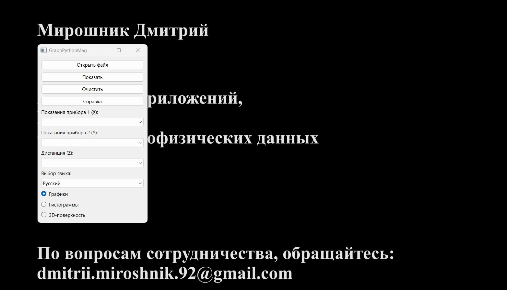
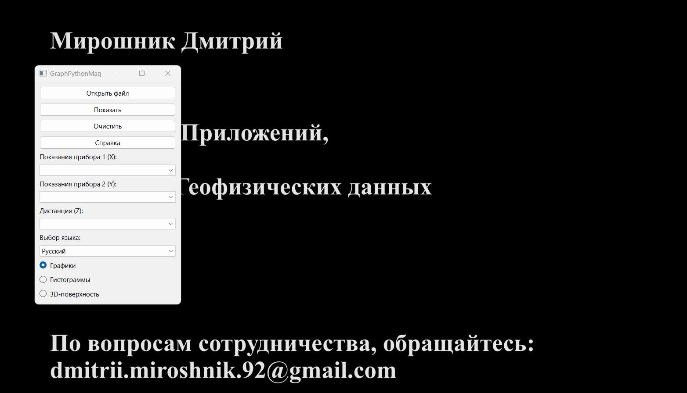
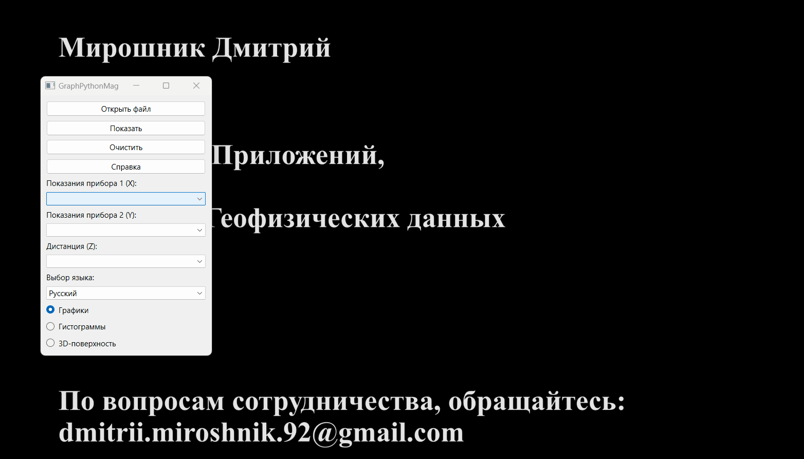
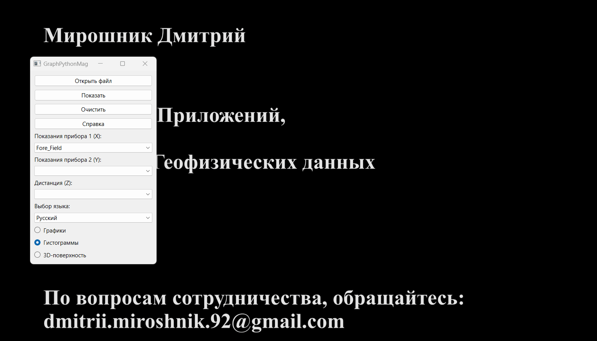
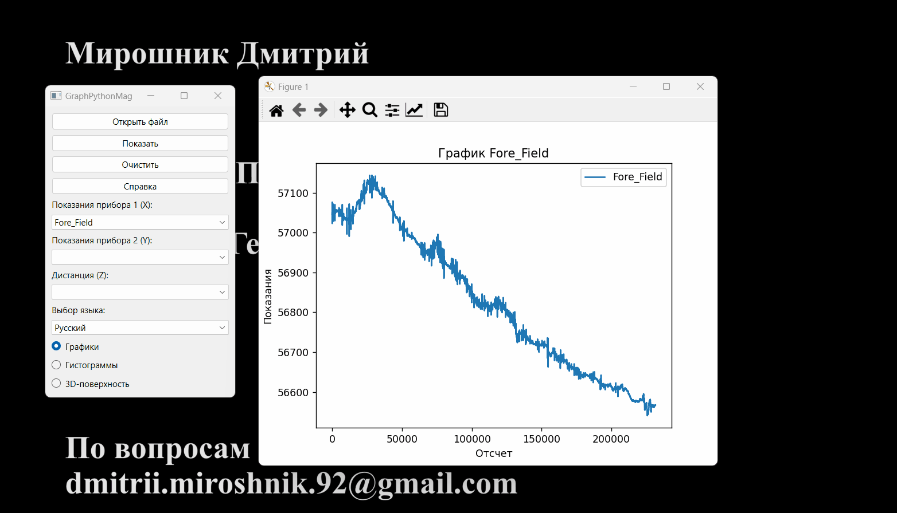
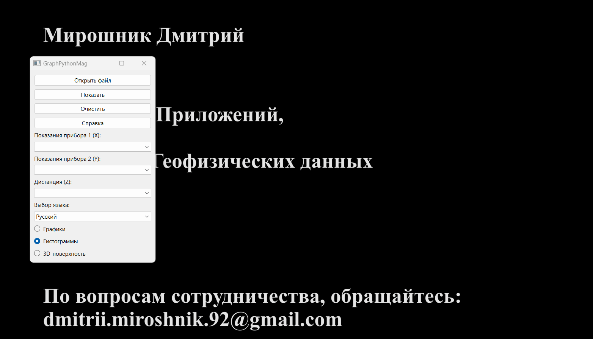
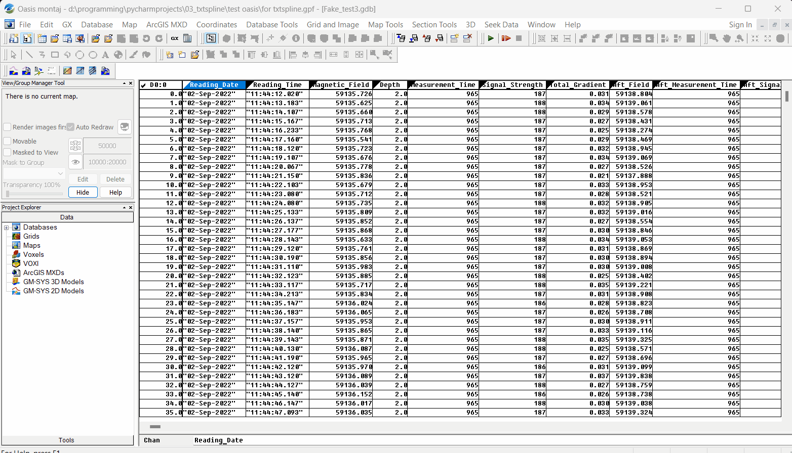

Questa applicazione è progettata per visualizzare vari dati geofisici.
Offre la possibilità di creare grafici, istogrammi e superfici 3D con qualità tipografica.
I dati numerici in formato tabellare, salvati in un file CSV, possono essere utilizzati come input.
Interfaccia del Programma
Fare clic sul pulsante "Apri" per trovare e aprire il file CSV di origine.

Usare il menu a discesa per selezionare i dati pertinenti.
Per eliminare i dati, fare clic sul pulsante "Cancella".
Per eseguire la rappresentazione grafica, fare clic sul pulsante "Mostra".
Per cambiare lingua dell'interfaccia, selezionare una delle lingue disponibili nel menu a discesa "Selezione Lingua".
In caso di domande, è possibile richiedere assistenza facendo clic sul pulsante "Guida".
Grafici
Per la creazione di grafici semplici viene utilizzata la libreria scientifica Matplotlib.
Sono implementati i seguenti tipi di grafici in questo programma:
Grafico semplice. Per creare un grafico semplice, selezionare i valori di una delle due colonne: "Misure Strumento 1" o "Misure Strumento 2".

Grafico combinato. Per confrontare le misurazioni di due strumenti, selezionare i valori di due colonne: "Misure Strumento 1" e "Misure Strumento 2".

Grafico in funzione della distanza. È inoltre possibile combinare diverse opzioni di grafico in funzione della distanza. Per fare ciò, selezionare il valore del canale di distanza nel menu a discesa "Distanza".
Istogrammi
Per la creazione degli istogrammi della distribuzione normale viene utilizzata la libreria Seaborn, un'estensione di Matplotlib.
Sono implementate diverse opzioni per mostrare la distribuzione normale in questo programma:
Istogramma semplice sovrapposto con una curva di distribuzione normale.
Per disegnare, selezionare i valori di una delle due colonne: "Misure Strumento 1" o "Misure Strumento 2".
Istogrammi combinati. Per confrontare le misurazioni, selezionare i valori di due colonne: "Misure Strumento 1" e "Misure Strumento 2".

Distribuzione dei valori in funzione della distanza. È inoltre possibile combinare diverse opzioni di visualizzazione in funzione della distanza. Per fare ciò, selezionare il valore del canale di distanza nel menu a discesa "Distanza".
Lavorare con la Finestra di Matplotlib
La finestra per la visualizzazione dei grafici scientifici - Matplotlib, consente all'utente di eseguire varie azioni, tra cui:
Trascinamento del grafico;
Zoom;
Visualizzazione dell'area;
Modifica delle etichette degli assi;
Cambiamento del colore;
Salvataggio del grafico nel formato selezionato, ecc.

Superfici 3D
Per la creazione delle superfici 3D, viene utilizzata la libreria Plotly.
Per disegnare una superficie, selezionare tutte e 3 le colonne: X, Y e Z. !!!Tutte le coordinate devono essere nel sistema cartesiano!!!

Lavorare con la Finestra delle Superfici 3D
La finestra per la visualizzazione delle superfici 3D consente all'utente di eseguire varie azioni, tra cui:
Trascinamento;
Zoom;
Rotazione;
Lettura dei dati;
Salvataggio dell'immagine nel formato selezionato, ecc.
Integrazione con OasisMontaj
Questa applicazione consente di lavorare con qualsiasi file CSV. Tuttavia, poiché questo programma è stato sviluppato su richiesta di AO "Yuzhmorgeologia",
vedremo il processo di esportazione di un database OasisMontaj in un file CSV.
I passaggi nell'ambiente OasisMontaj sono i seguenti:
Database / Esporta / CSV ecc...;
Selezionare i parametri di salvataggio;
Fare clic su "Ok".

Feedback
GraphPythonMag v 1.2.1
Autore: Dmitrii Miroshnik
Sviluppo dell'applicazione
Web design
Elaborazione dei dati geofisici
Per domande sulla collaborazione: dmitrii.miroshnik.92@gmail.com.
Puoi anche ringraziare l'autore.
Sarà felice di ricevere supporto e feedback!